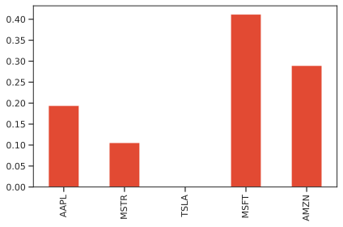

Getting started¶
Optimize a minimum volatility portfolio on real prices data¶
scikit-portfolio offers dozens of built-in portfolio optimization algorithsm and models called PortfolioEstimators.
Each estimator can be fitted to either equity prices or returns using its .fit method.
Here is a simple example where we fit a MinimumVolatility portfolio to some technological stock prices.
The asset prices are the adjusted daily close prices of Apple, Tesla, Amazon, Microsoft and Microstrategy, sampled over a 5 years period from 2016 to 2021.
from skportfolio import MinimumVolatility
from skportfolio.datasets import load_tech_stock_prices
import pandas as pd
prices = load_tech_stock_prices()
model = MinimumVolatility(
returns_data=False,
risk_free_rate=0.02,
frequency=252).fit(prices)
# print model weights
print(model.weights_)
# print model annualized sharpe ratio
print(f"Portfolio annualized Sharpe ratio = {model.score(prices):.3f}")
The .fit method generally accepts 2 inputs:
- The prices or returns pandas dataframe
X. - Additional data contained in
y. However, this parameter is always ignored and kept for compatibility reasons. The size of X is typically (n_temporal_samples, n_equities), which means that samples are represented as rows and prices or returns are represented as columns.
Differently from sklearn, here we require the variable X to be pandas dataframe with an arbitrary number of columns but indexed by a pd.DateTimeIndex.
Once the portfolio is fitted, it can be used to see how its weights work on out-of-sample
data with the .predict method:
model.predict(prices)
2016-08-22 266.255828
2016-08-23 267.384265
2016-08-24 265.692214
2016-08-25 266.492617
2016-08-26 269.143623
...
2021-08-16 1178.257286
2021-08-17 1157.389918
2021-08-18 1142.985767
2021-08-19 1143.877199
2021-08-20 1152.573843
Name: MinimumVolatility, Length: 1259, dtype: float64
The time series from .predict can be directly visualized with Pandas plotting methods:

Note
The output of the .predict method is always a pd.Series with the same name as the model class and the
values obtained by the dot product of prices with the portfolio weights.
In other words, the value of the portfolio evaluated if you bought the equities with the specified weights.
Internally the portfolio weights are contained as pd.Series attribute with the name model.weights_.
Under most of the standard circumstances, we deal with long portfolios, meaning that all weights are set to be positive numbers in the \([0,1]\) interval.
It is very simple to access the .weights_ attribute. When no .fit method is called, the model.weights_ attribute is set to None
print(model.weights_)
AAPL 0.19389
MSTR 0.10545
TSLA 0.00000
MSFT 0.41142
AMZN 0.28924
Name: MinimumVolatility, dtype: float64
It is easy also to visualize weights portfolio with the .plot.bar() method:
model.fit(prices).weights_.plot.bar()

Should I feed returns or prices to .fit method?¶
TL;DR: it depends. If you initialize the portfolio estimator with returns_data=False you should .fit the portfolio using prices, otherwise if you set returns_data=True you should .fit the portfolio using returns.
This code produce the same allocation:
MinimumVolatility(returns_data=False).weights_
as this one
returns = prices.pct_change().dropna()
MinimumVolatility(returns_data=True).weights_
Moreover, all portfolio estimators s can modify the returns_data parameter via the method .set_returns_data.
Warning
Differently from the fit method, remember that the .predict function must be fed with prices and not returns ⚠️.
You can always .fit on prices or returns, but always predict on prices to get meaningful results.
There is a mathematical reason for this. Given asset prices at time t as a \(N\)-dimensional vector \(\mathbf{P}(t)\), the portfolio total wealth \(W(t)\) is the dot product of asset prices and portfolio weights:
\begin{equation}
W(t) =\sum_{i=1}^N w_i P_i(t).
\end{equation}
By taking the portfolio return \(r_P(t)\) of portfolio wealth \(W(t)\) we get the following expression:
\begin{equation}r_P(t) = \frac{W(t)-W(t-1)}{W(t)} = \frac{\sum_{i=1}^N w_i \left\lbrack P_i(t) - P_i(t-1)\right\rbrack } {\sum_{i=1}^N w_i P_i (t-1)}.
\end{equation}
which is instead very different from the weighted sum of the individual asset returns \(r_i(t)\):
\begin{equation}
\sum_{i=1}^N w_i r_i(t) = \sum_{i=1}^N w_i \frac{P_i(t)-P_i(t-1)}{P_i(t-1)}
\end{equation}
This is the reason why the PortfolioEstimator class does not have a .fit_predict method.
You can fit a model with both prices or returns, but remember to predict always on prices and not on returns ⚠️.
MinimumVolatility(returns_data=False).fit(prices).predict(prices)
is equivalent to:
returns = prices.pct_change().dropna()
MinimumVolatility(returns_data=True).fit(returns).predict(prices)
Plotting the efficient frontier¶
For portfolio estimators supporting the functionality, it is possible to explore the efficient frontier. Moreover, it is easy to draw multiple fitted portfolios along the efficient frontier, specifying also colors.
from skportfolio import MinimumVolatility, MeanVarianceEfficientReturn
from skportfolio.datasets import load_tech_stock_prices
prices = load_tech_stock_prices()
ax = (
MinimumVolatility(returns_data=False)
.fit(prices)
.plot_frontier(
prices,
num_portfolios=20,
risk_return_color='#777777',
show_only_portfolio=True)
)
(
MeanVarianceEfficientReturn()
.set_target_return(0.6)
.fit(prices)
.plot_frontier(
prices,
num_portfolios=20,
risk_return_color='#348ABD',
show_only_portfolio=True,
ax=ax
)
)
(
MeanVarianceEfficientReturn()
.set_target_return(0.5)
.fit(prices)
.plot_frontier(
prices,
num_portfolios=20,
risk_return_color='#E24A33',
show_only_portfolio=False,
ax=ax
)
)
Every portfolio estimator depicts the complete frontier for the underlying model, with an additional colored dot indicating where the fitted portfolio falls in terms of risk-reward coordinates along the frontier, if the data has previously been fit.

Faster, parallel evaluation of the efficient frontier¶
Furthermore, if you require high precision in your efficient frontier reconstruction, you can take advantage of parallelization of the optimization problem for each portfolio on the frontier, by setting n_jobs higher than 1. See the example below:
from skportfolio import MinimumVolatility, MeanVarianceEfficientReturn
from skportfolio.datasets import load_tech_stock_prices
X = load_tech_stock_prices()
ax = MinimumVolatility(returns_data=False).fit(X).set_n_jobs(8).plot_frontier(X, num_portfolios=20, risk_return_color='darkblue')
ax = MeanVarianceEfficientReturn().set_target_return(0.6).fit(X).plot_frontier(X, frontier_line_color=None, risk_return_color='darkgreen')
Returns and risk estimators¶
In general, when we talk about expected returns, we mean a variety of statistical estimators of the expected value of equity returns, such as mean historical returns, whereas when we talk about risk, we usually mean volatility estimators like sample standard deviation of portfolio returns, or other more complex measures like the conditional value at risk.
scikit-portfolio has devised a method to cope with the problem of assessing expected returns and or risk, using the same API as the PortfolioEstimator.
All returns estimators are based on the BaseReturnsEstimator, containing the .expected_returns_ attribute.
On the other hand, all risk estimators are based on the BaseRiskEstimator whose main attribute is the .risk_matrix_.
While these two kind of classes are very general, all the returns and risk estimators are based on these, and they all
implement different ways of providing statistically valid estimates to these two.
Please note that almost every single PortfolioEstimator object requires the returns or risk estimators, or both as arguments in its __init__ method.
By default, they are initialized to MeanHistoricalLinearReturns and SampleCovariance when not specified.
The annualization constants are by default set to 252, but you can change to the frequency of the PortfolioEstimator when manually modified with the .set_frequency method.
For example here we modifiy the standard SampleCovariance estimator of the MinimumVolatility portfolio estimator
with the CovarianceExp estimator, a way to calculate covariance based on exponential moving averages of returns,
rather than all data.
We can also modify the default MeanHistoricalLinearReturns estimator with the MedianHistoricalLinearReturns, an estimator
of expected returns putting more emphasis on most frequent data, thus weighting outlier returns:
from skportfolio import MinimumVolatility, CovarianceExp, MedianHistoricalLinearReturns
model = MinimumVolatility(rets_estimator=MedianHistoricalLinearReturns(), cov_estimator=CovarianceExp())
If you have already initialized a PortfolioEstimator, but you need to feed different risk or returns estimators to the subsequent calls, you can always modify the returns or risk estimators
through the two methods:
.set_returns_estimator.set_risk_estimator
like in the following code snippet:
from skportfolio import MinimumVolatility, CovarianceExp, MedianHistoricalLinearReturns
from skportfolio.datasets import load_tech_stock_prices
prices = load_tech_stock_prices()
model = MinimumVolatility(returns_data=True)
print(model.set_returns_data(False).fit(prices).weights_)
print(model)
print(model.set_returns_estimator(MedianHistoricalLinearReturns()).set_risk_estimator(CovarianceExp()).fit(prices).weights_)
print(model)
Backtesting and model selection¶
Fitting a portfolio model to some price data does not entail that it will perform well on unseen data. Here the difference with classical machine learning algorithms is subtle.
Our goal here is not to predict anything, but to fit internal parameters of a portfolio to extrapolate it to new data, measuring its performance in terms of some specific metrics.
Imagine in the previous example we have fitted the minimum volatility portfolio over 4 years of data and want to compute its performance of providing good returns to the investor over 1 year of unseen equity data. How do we measure which portfolio method performs best out-of-sample, without getting trapped into the overfitting problem, or mixing training and testing data?
This is known in the financial investment domain as the backtesting phase of the investment portfolio.
The scikit-portfolio library, leaning on the well-established scikit-learn module for model selection, provides different methdos to split the data into train and test, adding new tools such as the very smart CombinatorialPurgedCrossValidation methods.
We here briefly show how to perform a 5-fold backtesting procedure, with the portfolio_cross_validate helper:
- We use a total of 8 cpus
- We calculate Sharpe ratio and Omega ratio for each one of the 5 test folds of a minimum volatility portfolio optimized on the remaining 4 train folds.
- The CV method is the classical
KFoldfromscikit-learn.
from skportfolio import portfolio_cross_validate, MinimumVolatility, sharpe_ratio_scorer, omega_ratio_scorer
from skportfolio.datasets import load_tech_stock_prices
from sklearn.model_selection import KFold
model = MinimumVolatility()
prices = load_tech_stock_prices()
portfolio_cross_validate(
estimator=model,
prices_or_returns=prices,
cv=KFold(n_splits=5),
scoring={
"sharpe_ratio": sharpe_ratio_scorer,
"omega_ratio": omega_ratio_scorer
},
n_jobs=8
)
As a result we obtain a pd.DataFrame with all the relevant information, fit time and scoring time in seconds over all folds, together with the two portfolio metrics
| fold | fit_time | score_time | test_sharpe_ratio | test_omega_ratio |
|---|---|---|---|---|
| 0 | 0.0263493 | 0.00355029 | 1.25578 | 1.24039 |
| 1 | 0.0191877 | 0.00233126 | 1.48821 | 1.29355 |
| 2 | 0.0255792 | 0.00363684 | 0.0513611 | 1.00932 |
| 3 | 0.0245926 | 0.0121238 | 1.20801 | 1.27315 |
| 4 | 0.023535 | 0.00933957 | 0.672825 | 1.12108 |
Alternatively we could have fitted all the skportfolio score estimators to get a complete breakdown of all the
metrics of the aforementioned portfolio estimator based on minimum volatility.
from skportfolio import all_scorers
portfolio_cross_validate(
estimator=model,
prices_or_returns=prices,
cv=KFold(n_splits=5),
scoring=all_scorers,
n_jobs=n_cpus
)
To have an idea of the current train-test split scheme you can use the nice utility function make_split_df from the skportfolio.model_selection module that prints a green circle for the train samples and a red circle for the test samples
from skportfolio.datasets import load_tech_stock_prices
from skportfolio.model_selection import make_split_df
from sklearn.model_selection import KFold
prices = load_tech_stock_prices().iloc[0:15,:]
make_split_df(KFold().split(prices), titles=("train", "test"))
This produces a dataframe where the columns are the temporal samples and the rows denote the fold number of the cross-validation. Here we limit the results to only 15 days of data. The 🔴 dots represent testing, while the 🟢 dots represent training. The total number of samples for both training and test is counted in the last two columns.
| Folds | 0 | 1 | 2 | 3 | 4 | 5 | 6 | 7 | 8 | 9 | 10 | 11 | 12 | 13 | 14 | train | test | cv_train | cv_test |
|---|---|---|---|---|---|---|---|---|---|---|---|---|---|---|---|---|---|---|---|
| Fold(1) | 🔴 | 🔴 | 🔴 | 🟢 | 🟢 | 🟢 | 🟢 | 🟢 | 🟢 | 🟢 | 🟢 | 🟢 | 🟢 | 🟢 | 🟢 | 12 | 3 | 0 | 0 |
| Fold(2) | 🟢 | 🟢 | 🟢 | 🔴 | 🔴 | 🔴 | 🟢 | 🟢 | 🟢 | 🟢 | 🟢 | 🟢 | 🟢 | 🟢 | 🟢 | 12 | 3 | 0 | 0 |
| Fold(3) | 🟢 | 🟢 | 🟢 | 🟢 | 🟢 | 🟢 | 🔴 | 🔴 | 🔴 | 🟢 | 🟢 | 🟢 | 🟢 | 🟢 | 🟢 | 12 | 3 | 0 | 0 |
| Fold(4) | 🟢 | 🟢 | 🟢 | 🟢 | 🟢 | 🟢 | 🟢 | 🟢 | 🟢 | 🔴 | 🔴 | 🔴 | 🟢 | 🟢 | 🟢 | 12 | 3 | 0 | 0 |
| Fold(5) | 🟢 | 🟢 | 🟢 | 🟢 | 🟢 | 🟢 | 🟢 | 🟢 | 🟢 | 🟢 | 🟢 | 🟢 | 🔴 | 🔴 | 🔴 | 12 | 3 | 0 | 0 |
Note that it is also possible to manually iterate over the folds, use different data splitting strategies, and use
custom scoring functions, all provided in the metrics submodule.
If interested, please refer to the skportfolio and sklearn API for more details.
Automatic parameters search (hyperparameters optimization)¶
All portfolio estimators have a number of internal parameters also called hyper-parameters that can be tuned to modify the algorithm results, and to tune one or another specific behaviour. It is important to note that most of the portfolio estimators come with default choices for their internal parameters, but in order to generalize well on unseen data, it is important to tune them via sound statistical methods.
Following the above example of the MinimumVolatility portfolio algorithm, we see that a number of internal parameters
can be chosen via the .get_params() method, similarly to the classical sklearn.Estimator object:
from skportfolio import MinimumVolatility
MinimumVolatility().get_params()
with the following result of internal parameters:
{
'cov_estimator__frequency': 252,
'cov_estimator__returns_data': False,
'cov_estimator': SampleCovariance(),
'frequency': 252,
'l2_gamma': 0,
'max_weight': 1,
'min_weight': 0,
'rets_estimator__frequency': 252,
'rets_estimator__returns_data': False,
'rets_estimator': MeanHistoricalLinearReturns(),
'returns_data': False,
'risk_free_rate': 0.0
}
Quite often among all these parameters it is not clear what the best value is, hence this has to be found through hyperparamenters selection via cross-validation.
As scikit-learn already provides tools to automatically find the best parameter combinations, we can randomly search
over the parameter space of the portfolio optimization algorithm with a GridSearchCV object.
When the search is over, the RandomizedSearchCV behaves as a skportfolio.PortfolioEstimator, but with internal values
fitted with the best set of parameters:
from sklearn.model_selection import GridSearchCV, KFold, train_test_split
from skportfolio import MinimumVolatility, sharpe_ratio_scorer
from skportfolio.datasets import load_tech_stock_prices
prices = load_tech_stock_prices()
prices_validation, prices_out_of_sample = train_test_split(prices, train_size=0.7, test_size=0.3, random_state=0, shuffle=False)
model = MinimumVolatility()
n_cpus = 8
n_iter = 100
best_model = GridSearchCV(
estimator=model,
param_grid=model.grid_parameters(),
cv=KFold(5),
n_jobs=n_cpus,
scoring=sharpe_ratio_scorer
).fit(prices_validation)
The refitted portfolio estimator is made available at the best_estimator_ attribute and permits using the .predict
method directly from the GridSearchCV fitted object, taking care in using the out of sample data for the portfolio
prediction in order to fairly compare different methods.
best_model.predict(prices_out_of_sample)
print(f"Best model Sharpe ratio = {best_model.best_estimator_.score(prices_out_of_sample):.3f}")
You can access the optimized parameters of the best estimator with .best_model and check their internal parameters
still with the .get_params() method:
print(best_model.best_estimator_.info())
print(best_model.best_params_)
You can also access the cross-validation results using the .cv_result_ attribute of the GridSearchCV estimator:
pd.DataFrame(best_model.cv_results_)